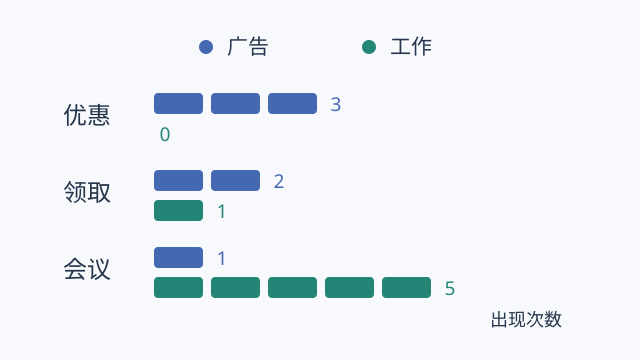
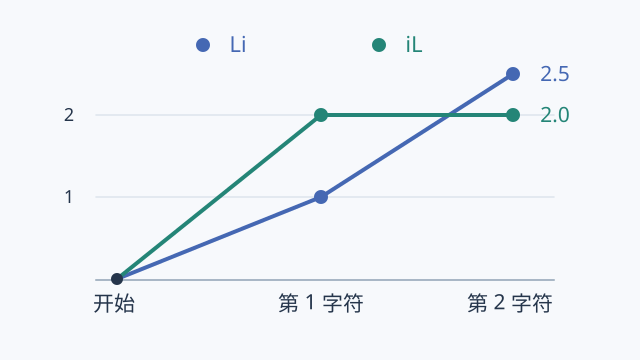
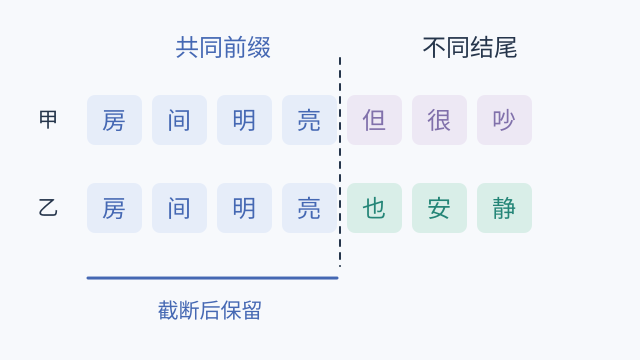

用一句中文和一小组计数开始，逐步读到文本表示、分类和逐词生成。
确定一句话中的词界，然后用词频完成第一次分类。
用“研究生命起源”比较两种查词方向，再看分词边界怎样影响搜索。

用三个词在两类邮件里的计数算出类别分数，再检查模型为什么会误判从没见过的邮件。
从词向量的距离走到循环网络，再跟踪编码器与解码器怎样传递信息。
用同一句话造出两类训练题，再算一次余弦相似度，理解词向量中的“邻居”。

同一串字符既可以提供一个类别标签，也可以拆成一串“下一个字符”的预测题。
从德语短句的第一个英语词开始，理解编码器、解码器、教师强制和注意力各在哪里起作用。
先用上下文判读一条评论，再改变温度，观察模型怎样选出下一个词。

跟随一条有转折的酒店评论，从分词、截断到两个类别分数，检查模型真正看到了什么。
把三个候选词的分数算成概率，观察温度、top-k 和 top-p 怎样改变续写。
常用关键词